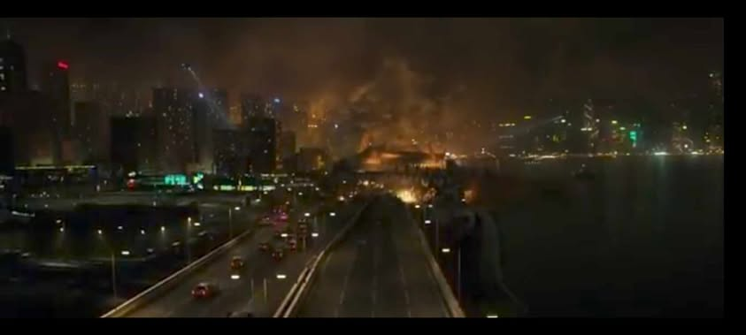
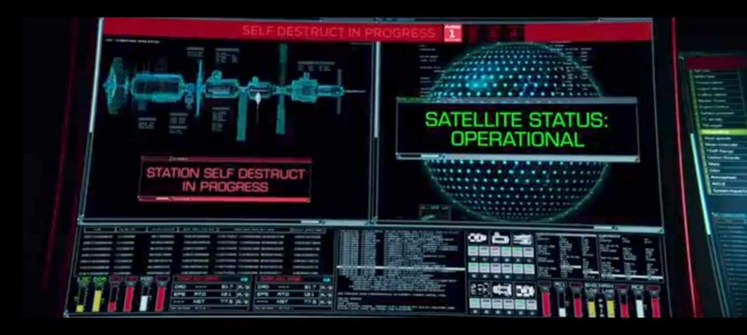

The film Geostorm showed us what might possibly happen if we invented a climate controlling system. They called it "Dutch Boy", the Dutch Boy is a project that is approved by many countries in the world knowing that it would benefit everyone. However, in the end the Dutch Boy was used as a weapon to reduce the population but failed.
Having a system for controlling the climate has its advantages and disadvantages. In the film Geostorm, we have seen the effects of having this system. Having the power to control the climate can help people in a lot of ways. When there is a natural disaster, it can be prevented or stopped by the system. We can even use the system to help us in agriculture. We can set the right environment for every species of plant there is. We can also use this system to solve the global warming and prevent any thing like global warming happen. People can also live in peace without worrying about natural disasters.
This climate-controlling system also has its disadvantages. Some people will say that controlling the climate is an act against the natural flow of life, and some will say that it is not. If this climate-controlling system is invented, there will be consequences to what it does This can be compared to consuming an illegal drug, the system may be helping us to live by controlling the climate, but there is a side effect that may not in effect right away. Living in a controlled climate environment may have an effect on people, they might become too dependent on it.
To sum it up, when we plan on having a climate-controlling system, we must first do something about the conflicts among countries, we must first unite. Because like in the film, the only time the countries agreed to do the system is when their lives are in danger. Then if we have built the system, there is still the risk of it being compromised like in the film. But ignoring the things that prevent it to launch, by weighing the pros and cons. I think having this system is great but it must not be abused, there must be a limited use and there must be criteria as to when the climate must be controlled like natural disasters that threatens the lives of many people
1.It shows what prevents the various disasters that happen in earth
2.It shows the destruction that can be caused when dutchboy malfuctions
3.The first scene showing dutch boy had a malfuction in its code causing a mess
4.The first signings of the "Geostorm"
5.After decoding his brother jake's message gets the help from his friend to find out who is causing the "geostorm" and using the dutchboy as a weapon
6.This was the scene when jake realized who was causing all the trouble in the dutchboy and who ordered the input of the virus
 Use this link to see the images if they do not load